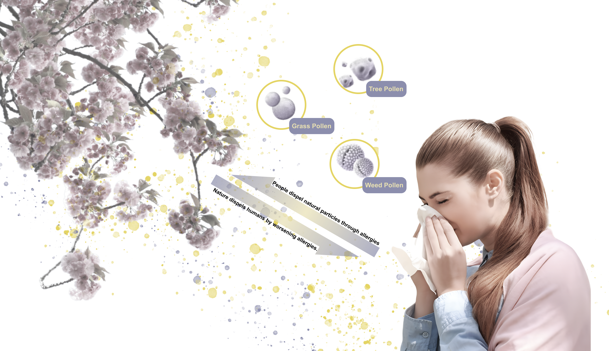

onAir
重塑人与空气中颗粒物关系的 AI 可穿戴设备

项目类型
个人项目
工业设计项目
工业设计项目
周期
2 个月
ML 细节
架构：CNN
框架：PyTorch
IDE：Jupyter Notebook
框架：PyTorch
IDE：Jupyter Notebook
工具
Arduino, Figma, Adobe Creative Suite, Rhino, Blender, Keyshot
项目背景
过敏是人类与身边不可见世界的互动
越来越多研究表明，全球变暖使花粉过敏加剧。若将过敏视为免疫系统在排除空气中的颗粒，那么人类活动导致的过敏加重，可视为自然对人类的不耐受表达。

概念
我们如何重塑这种互动？
项目目标是将过敏——这种人与自然的负面互动——转化为新的方式：既提升对空气中颗粒的认知，也提醒过敏人群做好防护。
形态探索
从过敏反应中寻找形态
形态探索的灵感来自过敏反应。

身体不同部位对过敏原有不同反应，可将警示信号应用于这些部位以模拟相应感觉。

颗粒形态可被提取并融入设备设计。
实验
不同形状的气囊在人体不同部位能唤起何种感觉？
我制作了从自然颗粒中提取形态的样本并充气，将样本置于身体不同部位，请参与者描述感受。

迭代

模型训练
基于 CNN 的花粉识别与分类
通过 Kaggle 获取高质量花粉数据集，经清洗与标注后，使用 PyTorch 搭建 CNN。训练 4 个 epoch 后得到理想结果。
机械结构
效果通过以下机械系统实现。因技术限制，原型阶段采用现成颗粒传感器。

三件设备可根据用户需求独立使用，通过可拆卸中央控制盒实现：连接软管即可控制各设备充放气。

过程
设备实体原型
制作从自然颗粒提取形态的样本并充气，置于身体不同部位，请参与者描述感受。


故事板
onAir 帮助过敏人群采取预防措施

onAir 帮助人们与微观世界互动